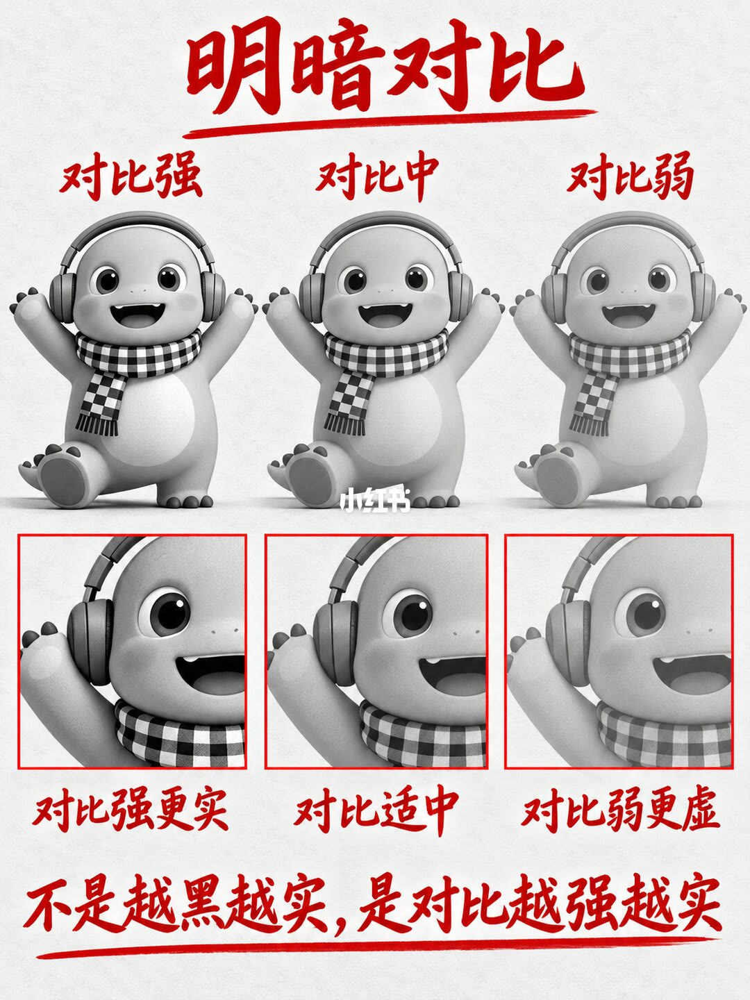
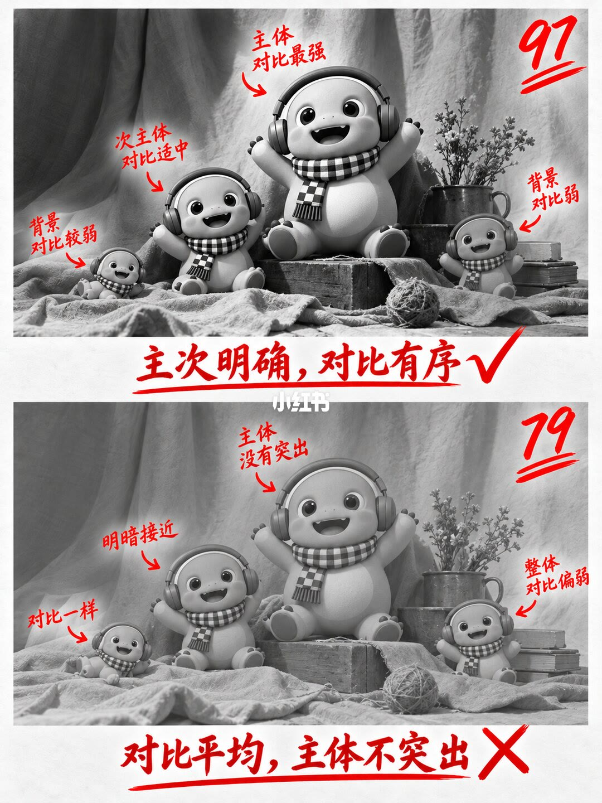
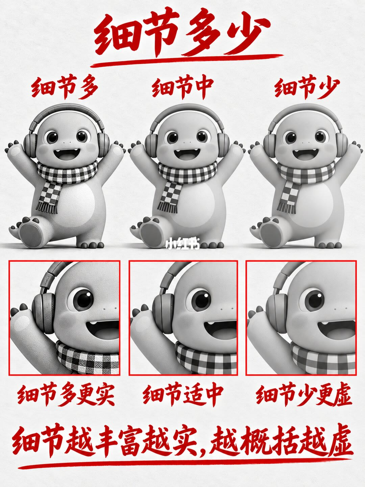
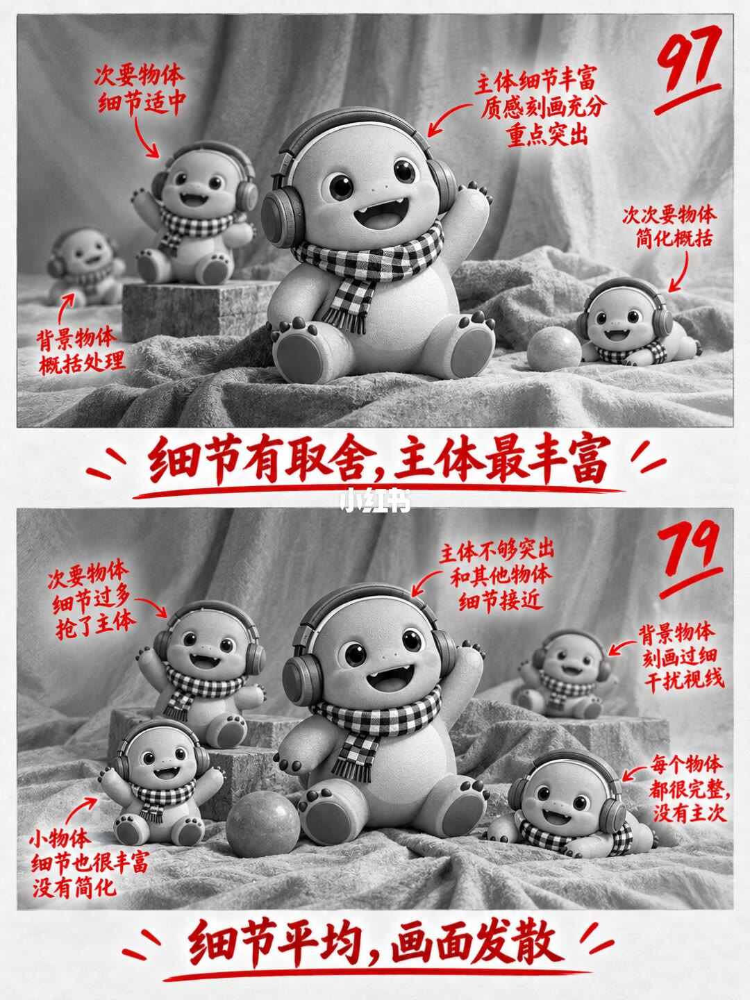
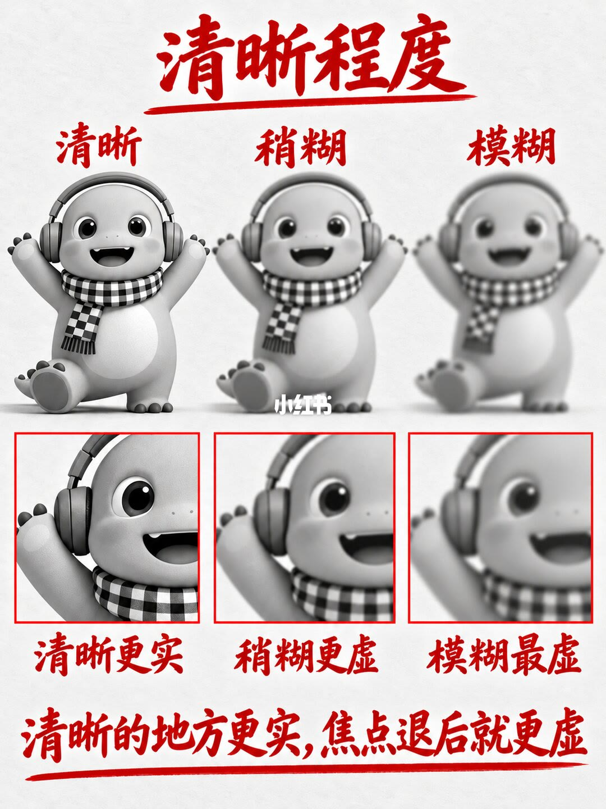
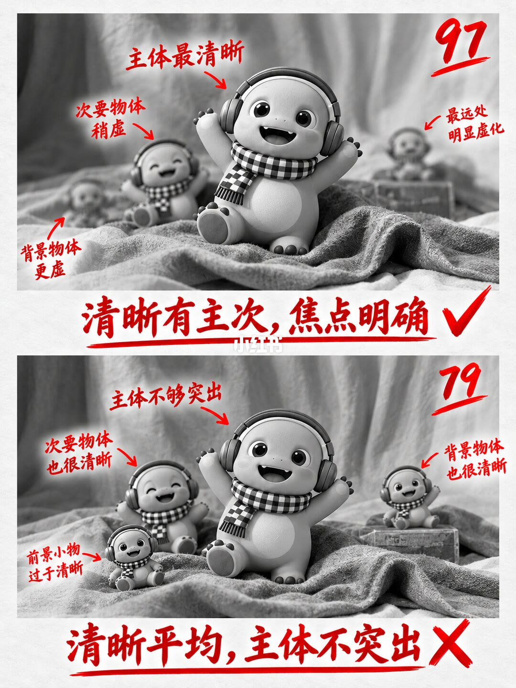
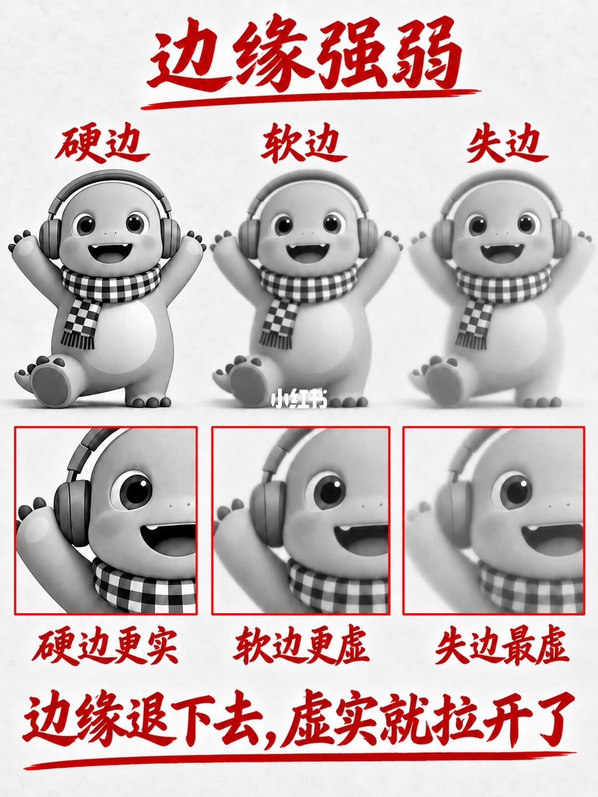
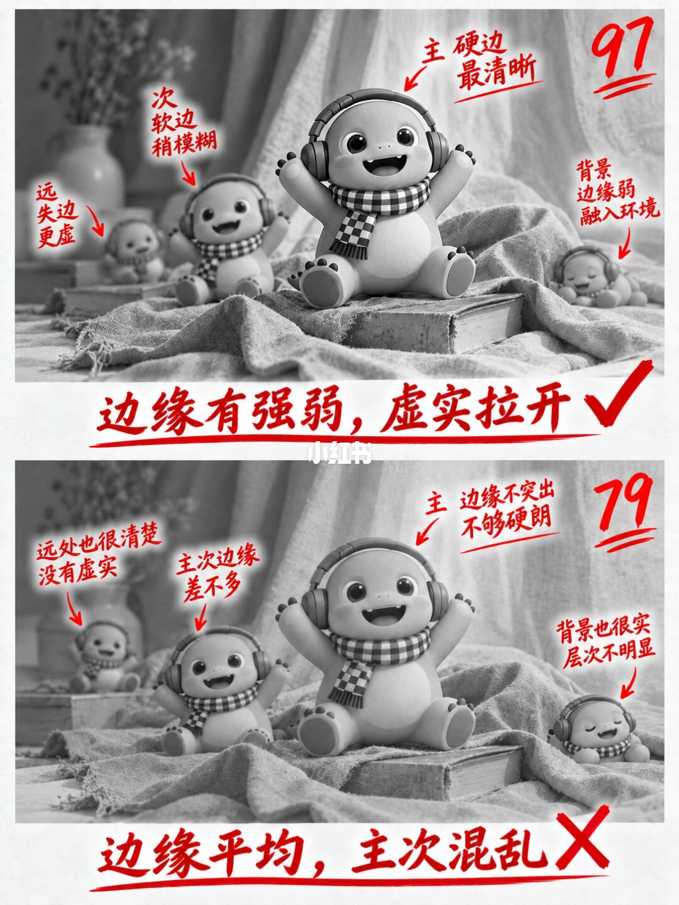

图文实录 · 小红书 · 杭州大云画室（翼帛）
知识以一种奇怪的方式进入大脑
标题问的是知识怎么进去。这八页的答案是：不靠把「实」定义成一句口诀，而靠同一只戴耳机、格子围巾的灰阶卡通小恐龙，把「实」拆成四个只改一项的旋钮——明暗对比、细节多少、清晰程度、边缘强弱。奇数页在一只角色上从实走到虚；偶数页把同一个旋钮用到一群角色上，主次拉开标 97，平均铺开标 79。知识是靠「只变一项，再看主次」进去的。
1/8
明暗对比：对比越强越实
页首红字「明暗对比」，下面一条手绘感红线。同一只小恐龙并排三只，都戴耳机和黑白格子围巾，双手张开。左标「对比强」，暗部很黑、亮部很白，体积最清楚。中标「对比中」。右标「对比弱」，整体发灰，暗部不黑、亮部不亮，看起来扁。
下面三个红框放大眼部和头部。左框「对比强更实」：瞳孔更黑，高光更白，耳机阴影更深。中框「对比适中」。右框「对比弱更虚」：瞳孔偏灰，高光不明显，阴影发糊。页底红字「不是越黑越实，是对比越强越实」，下面同样有红线。画面中间有淡的「小红书」水印。角色有没有被写成「奶龙」，这一页无法确认；笔记话题里有这个词，图上没标出来。

2/8
对比有序 97，对比平均 79
上下两张同一布景：几只同样的小恐龙放在有褶皱的布面上，灰阶，红字标注。上图右上角大号「97」，双红线。主体在中间，标「主体 对比最强」，亮部更亮、暗部更深。左侧中等大小的标「次主体 对比适中」。更远的两只标成背景，字是「对比较弱」和「对比弱」。底栏「主次明确，对比有序」，带对勾。
下图右上角「79」。中间那只标「主体 没有突出」。旁边一只标「明暗接近」，远处一只标「对比一样」，另一侧标「整体 对比偏弱」。底栏「对比平均，主体不突出」，带叉。上下两张的布景和角色数量对得上。具体是几只、每只的姿态名称，标注没有写全，无法确认。

3/8
细节多少：丰富更实，概括更虚
页首「细节多少」。仍是三只同样的小恐龙。左「细节多」：皮肤颗粒和围巾格子更清楚。中「细节中」：表面明显变软。右「细节少」：皮肤接近光滑，格子也被概括掉。红框放大头、耳机和围巾上沿。左「细节多更实」，中「细节适中」，右「细节少更虚」。页底「细节越丰富越实，越概括越虚」。
这一页只改细节密度，对比和清晰没有被拿出来单独比较。颗粒是画上去的还是渲染噪点，画面没有说明，无法确认。

4/8
细节有取舍 97，细节平均 79
上图「97」。红字「细节有取舍，主体最丰富」。中间大角色标「主体细节丰富 质感刻画充分 重点突出」。左侧略小的标「次要物体 细节适中」。更远处标「背景物体 概括处理」。前景另一只标「次次要物体 简化概括」。细节按主次递减，视线停在中间。
下图「79」。红字「细节平均，画面发散」。主体标「主体不够突出 和其他物体 细节接近」。次要物体标「次要物体 细节过多 抢了主体」。小物体标「小物体 细节也很丰富 没有简化」。远处标「背景物体 刻画过细 干扰视线」。还有一句「每个物体 都很完整，没有主次」。3/8 说细节多更实，到了这一页就不能每人同等丰富。

5/8
清晰程度：焦点退后就更虚
页首「清晰程度」。三只坐着、举手的小恐龙，从左到右变糊。左「清晰」，中「稍糊」，右「模糊」，右图边缘散开。红框仍是头部。左「清晰更实」，眼睛高光和围巾纹理还在。中「稍糊更虚」。右「模糊最虚」，细节糊成一片。页底「清晰的地方更实，焦点退后就更虚」。
这是清晰度的三档，不是光圈或焦距的测量。焦平面在哪、用的是什么镜头，画面没有数据，无法确认。

6/8
清晰有主次 97，清晰平均 79
上图「97」。中间那只最清楚，标「主体最清晰」。稍远的标「次要物体稍虚」。更远的标「背景物体更虚」，最远处标「最远处明显虚化」。底栏「清晰有主次，焦点明确」，带对勾。
下图「79」。从前到后都清楚。主体标「主体不够突出」。旁边标「次要物体也很清晰」。前景小物标「前景小物过于清晰」。远处标「背景物体也很清晰」。底栏「清晰平均，主体不突出」，带叉。全清楚在这一页是减分，不是加分。

7/8
边缘强弱：退下去，虚实才拉开
页首「边缘强弱」。三列：左「硬边」，轮廓和背景切得很干净，放大框标「硬边更实」。中「软边」，轮廓变成一段过渡，标「软边更虚」。右「失边」，轮廓糊进背景，标「失边最虚」。页底「边缘退下去，虚实就拉开了」。
硬边、软边、失边是这一页的三个名字。过渡有多宽、用的是什么笔刷，没有标，无法确认。

8/8
边缘有强弱 97，边缘平均 79
上图「97」，带对勾。底栏「边缘有强弱，虚实拉开」。中间标「主 硬边 最清晰」。左侧次要标「次 软边 稍模糊」。更远标「远 失边 更虚」。另一侧标「背景 边缘弱 融入环境」。硬、软、失和 7/8 的三个名字对得上，并且按远近排开。
下图「79」，带叉。底栏「边缘平均，主次混乱」。主体标「主 边缘不突出 不够硬朗」。次要标「主次边缘 差不多」。远处标「远处也很清楚 没有虚实」。背景标「背景也很实 层次不明显」。边缘一旦大家都硬，层次就读不出来。

收尾
四个旋钮，各只拧一项
结论：实和虚在这八页里是四个可分开的旋钮。对比强、细节多、焦点清晰、边缘硬，单只角色就更实；对比弱、细节概括、焦点退后、边缘失掉，就更虚。放到一群角色上时，最实的那一端只给主体，次要和背景依次退后。四次都是 97 对 79：有序或有取舍或有主次得 97，平均铺开得 79。
支撑页：对比的单只梯度在 1/8，主次在 2/8。细节的单只梯度在 3/8，取舍在 4/8。清晰的单只梯度在 5/8，焦点主次在 6/8。边缘的单只梯度在 7/8，远近强弱在 8/8。页底四句分别是「不是越黑越实，是对比越强越实」「细节越丰富越实，越概括越虚」「清晰的地方更实，焦点退后就更虚」「边缘退下去，虚实就拉开了」。
边界：四次 97 和 79 是画面上的分数，不是测量数据，笔记没有写评分规则。没有光比、色号、笔刷、光圈或焦距。角色话题里带「奶龙」，八页画面上没有写出这个名字，无法确认。2/8、4/8、6/8、8/8 的角色总数和每只的姿态名称没有标全，无法确认。3/8 的颗粒是手绘还是渲染，无法确认。5/8 和 6/8 不能直接换成一个具体光圈。7/8 的软边有多宽，无法确认。